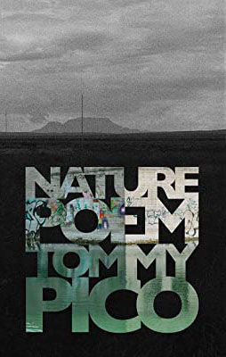

about the everyday life projects
This semester, we were tasked with a deliberately open-ended “Everyday Life Project.” Our assignment: to commit to a weekly practice with the goal of shifting our habits of attention. Beyond this minimal directive, the only guideline was to try to forge new connections between our daily lives and lives beyond own own.
Although each of our projects can stand as an individual work, they would not have been possible without the shared experiences that we were able to form throughout the semester. In spite of the constraints of the pandemic, our class was able to maintain a strong sense of community through grounding our own projects in a participatory and collective conversation. This page offers a look into some of the readings and opportunities which centered our dialogue.
We have each been exceptionally grateful to make something collaborative and unique out of our own everyday lives during a time when our everyday habits can seem both overwhelmingly surreal and mundane.
A special thanks to Professor Kate Stanley for facilitating and planning an amazing class. Our projects have all, in some form or another, been guided by her insight and warmth.
And thank you for taking the time to explore our practices.
- SASAH class of 2023
walden and civil disobedience by henry david thoreau
Not till we are lost, in other words not till we have lost the world, do we begin to find ourselves, and realize where we are and the infinite extent of our relations.
"When the stakes
are high and the threat is imminent, in some ways, we are forced to be grateful for the people closest for you and the things you do have."
-Shai Butler, Gratitude practices
visit from kristen case
Kristen Case, writer of our edition's introductions to Walden and Civil Disobedience, joined our class in conversation about Thoreau and her work with Thoreau's Kalendar.
the coves
"We anchored our projects in an area of London called “The Coves,” a tangled network of ponds, ravines, and trails that once served as a runoff for a paint factory. Within walking distance of the city centre, the Coves is a wilderness hiding in plain sight. We found an ideal guide through this unique ecosystem in Michelle Wilson, a PhD candidate in Visual Arts who is incorporating our work into a large-scale Coves community art project. Under Michelle’s guidance we became intimate with the Coves through a variety of hands-on practices: mapping trails, collecting and identifying plant specimens, picking up trash, harvesting and processing natural clay, and using phytoremediation techniques to clean up polluted soil, air and water."
-Azadeh Odlin, C.A.R.E.-Bridget Koza, The Clay Practice
-Sophie Wu, I have not been able to draw every piece of trash in London Ontario
how to do nothing by jenny odell
In that sense, the creek is a reminder that we do not live in a simulation—a streamlined world of products, results, experiences, reviews—but rather on a giant rock whose other life-forms operate according to an ancient, oozing, almost chthonic logic. Snaking through the midst of the banal everyday is a deep weirdness, a world of flowerings, decompositions, and seepages, of a million crawling things, of spores and lacy fungal filaments, of minerals reacting and things being eaten away—all just on the other side of the chain-link fence.
" I
believe that I am beginning to see the what exists “on the other side of the chain
-
link fence”
(Odell 126), as she details, whereas before, all I saw
was
the chain
-
link fence. What I
am most
interested moving forward with my life, is to “suspend [my] tendency toward instrumental
understanding [...] and instead sit with the unfathomable fact of their existence, which opens up
toward us but can never be fully grasped or known” (104). In
other words, I feel more prepared
to navigate and shape my experience of interacting with my environment."
-Tiffany Lin, My Happiness Project
nature poem by tommy pico

Everyone is looking for their stupid soulmate rn
Sade likens dating to war, says she’s on the front lines
which is also a kind of hunger
"I saw a consistent thematic intersection between my poetry and Pico’s and I
think he served as a great example for me to break away from conventional poetic norms. He
acted as a framework almost for me to allow my imagination to take me wherever
and, more so,
to be okay with that."
-Matthew Dawkins, The Evolution of Mankind As Told By Strangers
writing workshop with tommy pico
An interactive writing workshop led by Tommy Pico on the topic of combatting "writer's block".
\community writing hours
Many of us are used to working in coffee shops, libraries, and on-campus, so it can be exceptionally isolating to do work alone. We set up "community writing hours" where we were able to set goals and work together for an hour at a time.
annihilation by jeff vandermeer
When we wake, it is because something, some event, some pinprick even, disturbs the edges of what we’ve taken as reality.
"My
practice
served a pin, waking me from
the slumber of the habitual
. I call my ELP a practice,
similar to how meditation
is a practice
,
because I think their respective purposes are very similar;
both meditation and this
ELP
have served to improve my focus."
-Zoe Trottier, Waste on a Budget